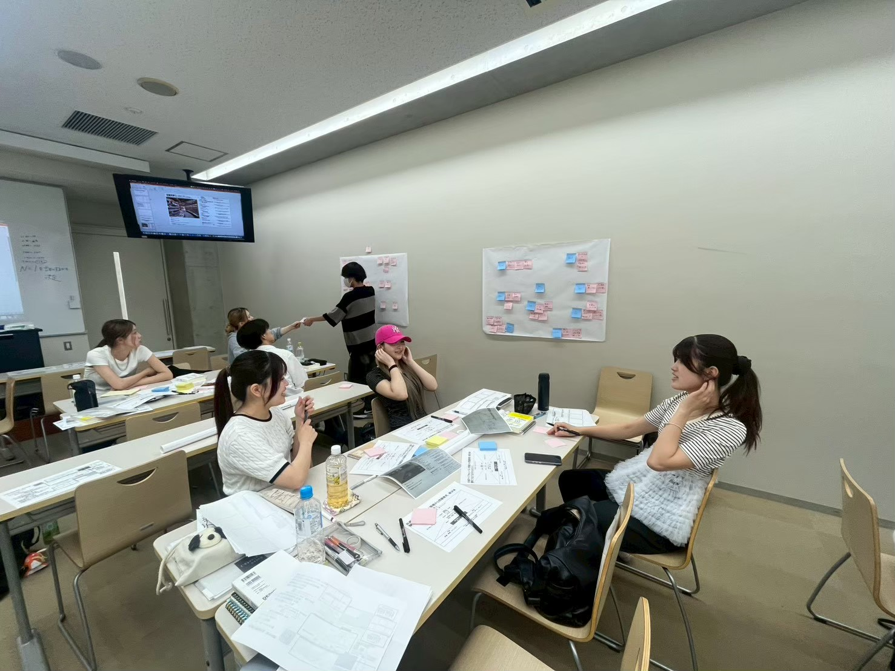

ここでしかできない体験！
先生はとても人脈が広いお方なので、企業の方が直接授業に来てくださることがあります！
普通に生活しているだけでは絶対に聞けないようなお話を聞いたり、貴重な体験をさせていただいたりできます。
例えば、某新作アイスを発売した会社や、「あったらいいな」を形にする家電を発売している会社など、さまざまな企業や大学の方が来てくださいます！
上の写真は、関西の某大学の先生と一緒に「感情曲線」を用いたワークショップを行ったときのものです。

先生はとても人脈が広いお方なので、企業の方が直接授業に来てくださることがあります！
普通に生活しているだけでは絶対に聞けないようなお話を聞いたり、貴重な体験をさせていただいたりできます。
例えば、某新作アイスを発売した会社や、「あったらいいな」を形にする家電を発売している会社など、さまざまな企業や大学の方が来てくださいます！
上の写真は、関西の某大学の先生と一緒に「感情曲線」を用いたワークショップを行ったときのものです。